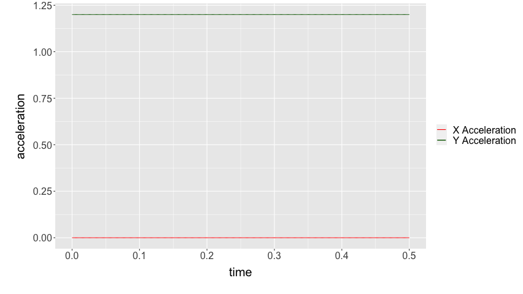
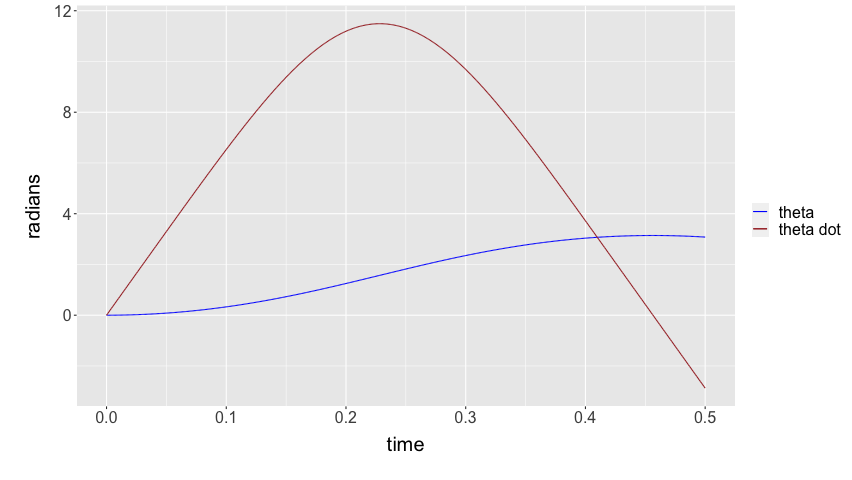
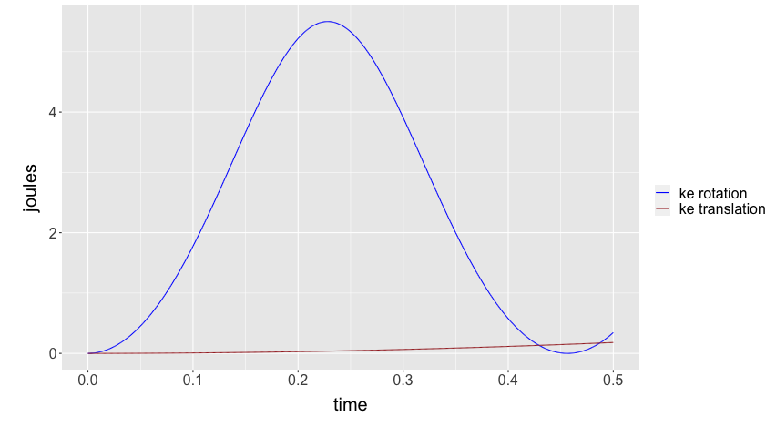

We first set up the same set of basic assumptions and variables.
GRAV <- 9.8 # gravity (m/s^2) MASS <- 1 # mass (kg) I_CM <- 1/12 # roational inertia (kg m^2) PHI <- pi/6 # angle of Ft relative to floor (parallel) (rad) L <- 0.5 # distance from the center of mass (of rotation point) to tenson (m) FT <- 12 # tension force (N) OMEGA <- 0.1 # angle of line orthogonal to floor relative to gravity (rad) (because shifted axis)
Additionally, we set the time interval and seed values for all values that's tallied:
dt <- 0.0001 t_max <- 5 vx <- 0 vy <- 0 x <- 0 y <- 0 time <- 0 theta <- 0 thetadot <- 0
Great. Let's start writing the loop now by setting up a bunch of arrays and writing their values in.
cTime = NULL cTorqueNet = NULL cDDTheta = NULL cDTheta = NULL cTheta = NULL cAccelX = NULL cAccelY = NULL cVelX = NULL cVelY = NULL cPosX = NULL cPosY = NULL cFNetX = NULL cFNetY = NULL cKERot = NULL cKETrans = NULL
Awesome, we will start tallying, then!
for (i in 0:(t_max/dt)) {
# write down standard values
cTime[i] = time
cTheta[i] = theta
# torque is calculated via the dot product between the vector of the radius projected out
# and also the angle at which the thing is at (so like theta + phi)
#
# note that, unlike the tabled version, L here represets distance from CoM to tension
# application
torque <- FT*L*cos(theta+PHI)
cTorqueNet[i] = torque
# from knowing the torque, we could divide out the rotational inertia to figure the
# acceleration of rotation
thetadotdot <- torque/I_CM
cDDTheta[i] <- thetadotdot
# from this, we could of course tally for the velocity of theta as well
thetadot <- dt*thetadotdot + thetadot
cDTheta[i] <- thetadot
# After knowing the value for theta, we could use it to calculate the net forces in
# both components.
# we define up as +, down as -, right as +, left as -
fnet_x <- FT*sin(PHI) + MASS*GRAV*sin(OMEGA)
fnet_y <- FT*cos(PHI) - MASS*GRAV*cos(OMEGA)
# "I think ax and ay will be constant with time" --- Mark
cFNetX[i] = fnet_x
cFNetY[i] = fnet_y
# Dividing the mass out, we could get accelerations
ax <- fnet_x/MASS
ay <- fnet_y/MASS
# We also tally the components seperately for velocity
vx <- ax*dt + vx
vy <- ay*dt + vy
# We finally tally the positions as well
x <- vx*dt + x
y <- vy*dt + y
# And we add them together to tally
cAccelX[i] = ax
cAccelY[i] = ay
cVelX[i] = ax
cVelY[i] = ay
cPosX[i] = x
cPosY[i] = y
cKERot[i] = 0.5 * I_CM * thetadot^2
cKETrans[i] = 0.5 * MASS * (vx^2+vy^2)
# We increment the time and theta based on the tallying variable
time <- dt + time
theta <- dt*thetadot + theta
}
rotating_link <- data.frame(cTime,
cTheta,
cDTheta,
cDDTheta,
cTorqueNet,
cAccelX,
cAccelY,
cVelX,
cVelY,
cPosX,
cPosY,
cKERot,
cKETrans)
names(rotating_link) <- c("time",
"theta",
"d.theta",
"dd.theta",
"net.torque",
"accel.x",
"accel.y",
"vel.x",
"vel.y",
"pos.x",
"pos.y",
"ke.rot",
"ke.trans")
Let's import some visualization tools, etc.
library(tidyverse)
Let's first see the head of this table:
head(rotating_link)
1e-04 6.23538290724796e-07 0.0124707635697569 62.353806625089 5.19615055209075 6.97836748313892 0.64126402568861 6.97836748313892 0.64126402568861 2.09351024494167e-07 1.92379207706583e-08 6.47999766719895e-06 9.82176645607458e-07 2e-04 1.87061464770048e-06 0.0187061397427812 62.3537617302432 5.1961468108536 6.97836748313892 0.64126402568861 6.97836748313892 0.64126402568861 4.18702048988335e-07 3.84758415413166e-08 1.45799860031857e-05 2.20989745261678e-06 3e-04 3.7412286219786e-06 0.0249415091815625 62.3536943878128 5.1961411989844 6.97836748313892 0.64126402568861 6.97836748313892 0.64126402568861 6.97836748313892e-07 6.4126402568861e-08 2.59199533439152e-05 3.92870658242983e-06 4e-04 6.23537954013485e-06 0.0311768696413229 62.353604597604 5.196133716467 6.97836748313892 0.64126402568861 6.97836748313892 0.64126402568861 1.04675512247084e-06 9.61896038532915e-08 4.04998833596683e-05 6.13860403504662e-06 5e-04 9.35306650426713e-06 0.0374122188772587 62.3534923593581 5.19612436327984 6.97836748313892 0.64126402568861 6.97836748313892 0.64126402568861 1.46545717145917e-06 1.34665445394608e-07 5.83197550549962e-05 8.83958981046713e-06 6e-04 1.3094288391993e-05 0.0436475546445339 62.3533576727519 5.19611313939599 6.97836748313892 0.64126402568861 6.97836748313892 0.64126402568861 1.9539428952789e-06 1.79553927192811e-07 7.93795427686487e-05 1.20316639086914e-05
Before we start graphing, let's set a common graph theme.
default.theme <- theme(text = element_text(size=20), axis.title.y = element_text(margin = margin(t = 0, r = 10, b = 0, l = 20)), axis.title.x = element_text(margin = margin(t = 10, r = 0, b = 20, l = 0)))
We will graph ax and ay on top of each other:
rotating_link %>% ggplot() + geom_line(aes(x=time, y=accel.x, colour="X Acceleration")) + geom_line(aes(x=time, y=accel.y, colour="Y Acceleration")) + scale_colour_manual("", breaks = c("X Acceleration", "Y Acceleration"), values = c("red", "dark green")) + ylab("acceleration") + default.theme

Theta dot atop theta:
rotating_link %>% ggplot() + geom_line(aes(x=time, y=theta, colour="theta")) + geom_line(aes(x=time, y=d.theta, colour="theta dot")) + scale_colour_manual("", breaks = c("theta", "theta dot"), values = c("blue", "brown")) + ylab("radians") + default.theme

We finally, plot KE rotation and translation
rotating_link %>% ggplot() + geom_line(aes(x=time, y=ke.rot, colour="ke rotation")) + geom_line(aes(x=time, y=ke.trans, colour="ke translation")) + scale_colour_manual("", breaks = c("ke rotation", "ke translation"), values = c("blue", "brown")) + ylab("joules") + default.theme

Let's also plot torque as well.
rotating_link %>% ggplot() + geom_line(aes(x=time, y=net.torque)) + default.theme

Finally, let's plot velocity and position
rotating_link %>% ggplot() + geom_line(aes(x=time, y=pos.x, colour="x position")) + geom_line(aes(x=time, y=pos.y, colour="y position")) + scale_colour_manual("", breaks = c("x position", "y position"), values = c("red", "dark green")) + ylab("metres") + default.theme